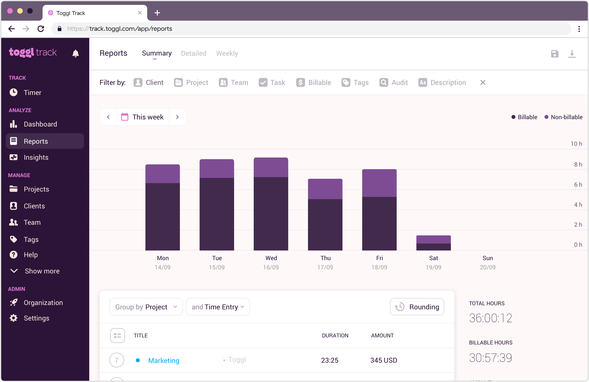

Web Data Connector
A Tableau Web Data Connector that pulls in your task tracking data from the Detailed Report view on Toggl Track
View on GitHub

vsffs
Web Data Connector
A Tableau Web Data Connector that pulls in your task tracking data from the Detailed Report view on Toggl Track
View on GitHub